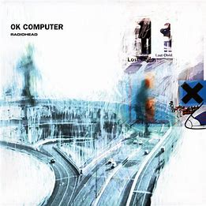

Why is the Radiohead album, OK Computer still rated as one of the greatest albums of all time?

Radiohead's OK Computer, released in 1997, is still rated as one of the greatest albums of all time for many reasons. It is a groundbreaking album that mixed elements of rock, electronica, and prog rock to create a unique and influential sound. The album's lyrics are also highly praised, with Thom Yorke's introspective and often dark lyrics exploring themes of alienation, technology, and consumerism.
Here are some of the specific reasons why OK Computer is so highly regarded:
- Its innovative sound. OK Computer was one of the first albums to successfully combine elements of rock, electronica, and prog rock. The album's soundscapes are rich and complex, with a variety of instruments and textures used to create a unique and atmospheric listening experience.
- Its powerful lyrics. Thom Yorke's lyrics on OK Computer are some of the most intelligent and thought-provoking ever written. He explores complex themes such as alienation, technology, and consumerism in a way that is both personal and universal.
- Its influence on other artists. OK Computer has been incredibly influential on other artists, both in and out of the rock genre. It is considered to be one of the defining albums of the 1990s, and its impact can still be heard in music today.
Some of the most iconic songs from OK Computer include "Paranoid Android," "Karma Police," "No Surprises," and "Lucky." These songs are all masterpieces of songwriting and production, and they continue to be enjoyed by fans all over the world.
In addition to its critical acclaim, OK Computer was also a commercial success, reaching number one in the UK and number two in the US. It has sold over 3 million copies in the US and over 5 million copies worldwide.
Interesting Facts
- The album was recorded in a 16th-century manor house called St Catherine's Court in Bath, England.
- The album's title is a reference to the science fiction comedy series The Hitchhiker's Guide to the Galaxy by Douglas Adams.
- Thom Yorke, the band's lead singer, was struggling with depression and anxiety at the time of the album's recording.
- The band experimented with a variety of new sounds and techniques on OK Computer. They used samplers, synthesizers, and even a string quartet to create the album's unique sound.
- The album's most famous song, "Paranoid Android," is six minutes long and features a variety of different musical styles, including rock, electronica, and jazz. It is considered to be one of the most complex and ambitious songs ever written.
- The album was recorded in their rehearsal space in Oxfordshire, England.
- They used a variety of different instruments and recording techniques, including samplers, synthesizers, and even a string quartet.
- The album was produced by Nigel Godrich, who has worked with Radiohead on all of their subsequent albums.
- OK Computer was released on May 21, 1997, to critical acclaim. It was named one of the greatest albums of all time by several publications, including Rolling Stone and Time magazine.